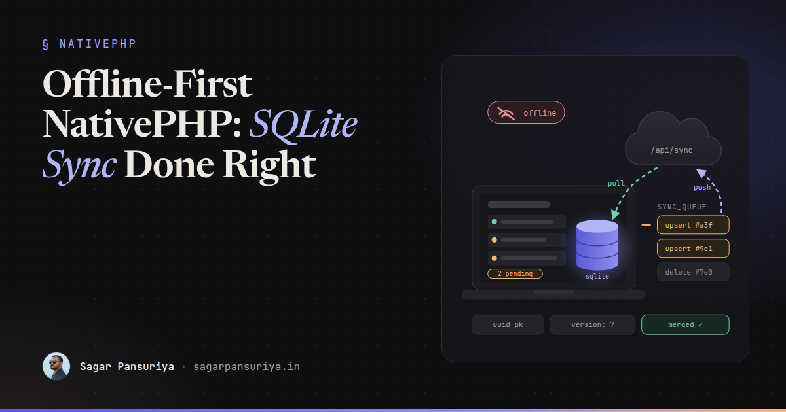
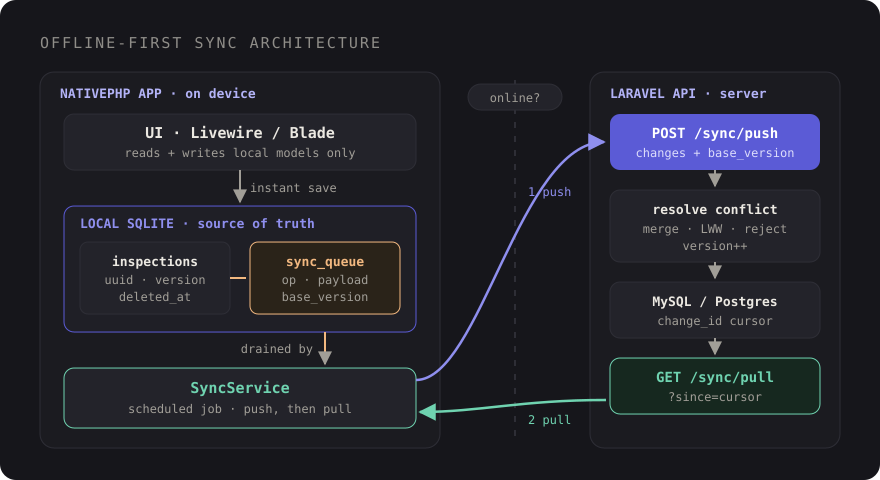

Offline-First NativePHP Apps: Local SQLite, a Sync Queue and Conflict Resolution


Picture a field inspector using a desktop app on a laptop in a basement plant room. No Wi-Fi, one bar of mobile signal that comes and goes. They fill in twenty inspection forms, close the lid, and drive back to the office. If your app treats the server as the source of truth, one of two things happened: the forms failed to save, or they "saved" into a spinner that never finished.
NativePHP makes it easy to ship a Laravel app to the desktop, and it gives you a local SQLite database out of the box. That's the foundation for doing this properly: offline-first, where the local database is what the app reads and writes, and the server is something you sync with when you can.
This post covers the architecture I'd reach for, the migrations, a sync service that pushes and pulls changes, the Laravel API on the other end, and how to pick a conflict strategy that doesn't quietly lose people's work.
The architecture in one picture
The core rule: the UI never talks to the remote API directly. Livewire components and controllers read and write local Eloquent models. Every write also records a row in a sync queue. A background job drains that queue to the server and pulls down whatever changed there.

This gives you three properties that are hard to retrofit later:
- Every action is instant. Saving is a local SQLite write, so it's fast whether you're online or not.
- Nothing is lost. A change stays in the queue until the server acknowledges it. Crashes, sleep and lost connections just delay it.
- Sync is one place in the code. Not scattered across every form handler with its own retry logic.
Identity: UUIDs, not auto-increment
An offline client can't ask the server for the next ID. If two laptops both create "inspection 57" while offline, you have a collision the moment they sync. So every syncable record gets a UUID generated on the client, and that UUID is the primary key on both sides.
Laravel's HasUuids trait handles generation, and its UUIDs are time-ordered,
which keeps SQLite and MySQL indexes happy. Alongside the UUID you want two more things on
every syncable table: a version counter for conflict detection and soft deletes,
because a hard-deleted row can't tell the other side it's gone.
// database/migrations/2026_10_01_000000_create_inspections_table.php
Schema::create('inspections', function (Blueprint $table) {
$table->uuid('id')->primary();
$table->string('site_name');
$table->text('notes')->nullable();
$table->string('status')->default('draft');
$table->unsignedInteger('version')->default(0); // server's version we last saw
$table->timestamp('synced_at')->nullable();
$table->timestamps();
$table->softDeletes();
});The sync queue table
You could mark rows as "dirty" with a flag instead. I prefer an explicit queue (an outbox) because it records what happened, in order, and gives you a natural place for retry counts and errors:
Schema::create('sync_queue', function (Blueprint $table) {
$table->id();
$table->string('entity'); // 'inspections'
$table->uuid('entity_id');
$table->string('operation'); // 'upsert' | 'delete'
$table->json('payload'); // changed fields
$table->unsignedInteger('base_version');
$table->unsignedSmallInteger('attempts')->default(0);
$table->text('last_error')->nullable();
$table->timestamps();
$table->index(['entity', 'entity_id']);
});base_version is the important column. It records which server version the user
was editing when they made the change. That's how the server knows whether someone else got
there first.
To make recording automatic, hook into model events so nobody has to remember:
trait Syncable
{
public static function bootSyncable(): void
{
static::saved(fn ($model) => $model->enqueue('upsert'));
static::deleted(fn ($model) => $model->enqueue('delete'));
}
protected function enqueue(string $operation): void
{
if ($this->applyingRemote ?? false) {
return; // changes pulled from the server must not echo back
}
SyncQueue::create([
'entity' => $this->getTable(),
'entity_id' => $this->getKey(),
'operation' => $operation,
'payload' => $operation === 'delete' ? [] : ($this->getChanges() ?: $this->getAttributes()),
'base_version' => $this->version,
]);
}
}The applyingRemote guard matters. Without it, every change you pull from the
server gets queued and pushed straight back, and you've built an infinite loop.
The sync service: push, then pull
Order matters. Push local changes first so the server can detect conflicts against what the user actually did. Then pull everything that changed since the last successful pull.
class SyncService
{
public function run(): void
{
if (! $this->online()) {
return;
}
$this->push();
$this->pull();
}
protected function push(): void
{
SyncQueue::orderBy('id')->chunkById(50, function ($batch) {
$response = $this->api()->post('/api/sync/push', [
'changes' => $batch->map->only(['id', 'entity', 'entity_id', 'operation', 'payload', 'base_version']),
]);
if ($response->failed()) {
$batch->each->increment('attempts');
return false; // stop, try again next run
}
foreach ($response->json('results') as $result) {
$this->applyServerRecord($result['entity'], $result['record']);
SyncQueue::whereKey($result['queue_id'])->delete();
}
});
}
protected function pull(): void
{
$cursor = Setting::get('sync_cursor');
$response = $this->api()->get('/api/sync/pull', ['since' => $cursor]);
if ($response->failed()) {
return;
}
foreach ($response->json('records') as $row) {
$this->applyServerRecord($row['entity'], $row['record']);
}
Setting::put('sync_cursor', $response->json('cursor'));
}
protected function api(): PendingRequest
{
return Http::baseUrl(config('services.sync.url'))
->withToken(Setting::get('api_token'))
->acceptJson()
->timeout(15);
}
}Setting here is whatever small key-value store you use locally; a
settings table works fine. applyServerRecord upserts the row with the
applyingRemote flag set and stores the server's version. It should
skip any record that still has pending entries in the queue, so a pull never overwrites
local work that hasn't been pushed yet.
Use the server's clock, not the laptop's
The cursor must come from the server. Client clocks drift, get changed by hand, and jump when laptops wake from sleep. If you pull "everything updated after 10:02 according to my laptop", you will eventually miss records. Let the server hand back an opaque cursor and send it back unchanged.
The Laravel API on the other end
The server's job is to compare base_version with the current version, apply or
resolve, bump the version, and return the canonical record. Here's the push endpoint with a
field-level merge:
// app/Http/Controllers/SyncController.php
public function push(Request $request)
{
$results = [];
foreach ($request->input('changes') as $change) {
$results[] = DB::transaction(function () use ($change, $request) {
$record = Inspection::withTrashed()
->where('team_id', $request->user()->team_id)
->lockForUpdate()
->find($change['entity_id'])
?? new Inspection(['id' => $change['entity_id'], 'team_id' => $request->user()->team_id]);
if ($change['operation'] === 'delete') {
$record->exists && $record->delete();
} else {
$incoming = Arr::only($change['payload'], ['site_name', 'notes', 'status']);
if ($record->exists && $record->version !== $change['base_version']) {
// Conflict. fill() only touches fields this client sent, so the other side's
// edits elsewhere survive. resolveClashes() handles fields changed on both sides.
$incoming = $this->resolveClashes($record, $incoming, $change['base_version']);
}
$record->fill($incoming);
}
$record->version++;
$record->save();
return ['queue_id' => $change['id'], 'entity' => 'inspections', 'record' => $record];
});
}
return ['results' => $results];
}resolveClashes() needs to know which fields changed on the server since
base_version. A small per-record change log or a per-field version map both
work. If you don't have either yet, a safe starting rule is "server wins on clashing fields,
client wins everywhere else".
The pull endpoint returns records changed after the cursor, including soft-deleted ones,
ordered by an indexed, server-side column. A monotonically increasing
change_id (updated on every write) is more reliable than
updated_at, because two writes in the same second can otherwise straddle a
cursor.
Choosing a conflict strategy
There's no universally right answer, and the worst option is not choosing. Decide per entity:
| Strategy | How it works | Good for |
|---|---|---|
| Last write wins | The most recent push overwrites everything | Personal data only one person edits |
| Field-level merge | Apply only fields the client changed; real clashes need a rule | Shared records edited in different places |
| Server-authoritative | Reject the change, return the server copy, let the user redo it | Money, stock levels, approvals |
| Keep both | Save the losing version as a conflict copy for review | Long free-text notes |
Field-level merge is the one I reach for most. It only needs the client to send changed fields (which the queue already does), and it turns most "conflicts" into non-events: the inspector updated the notes, the office updated the status, both survive. When the same field changed on both sides, fall back to one of the other rules, and tell the user.
Whatever you pick, surface it. A small "This record was also edited in the office. Your notes were kept." banner costs almost nothing and saves a lot of support tickets.
Detecting connectivity
Don't trust a single signal. The browser's navigator.onLine and the
online/offline events are useful for UI hints, but they only tell
you there's a network interface, not that your API is reachable. The honest check is a cheap
request to your own server with a short timeout:
protected function online(): bool
{
try {
return Http::timeout(3)->get(config('services.sync.url').'/up')->successful();
} catch (ConnectionException) {
return false;
}
}Laravel's default /up health route is perfect for this. In the UI, show a quiet
status indicator with the number of pending changes. Users relax a lot when they can see
"3 changes waiting to sync" instead of guessing.
Running sync in the background
Wrap the service in a queued job and schedule it. NativePHP's desktop runtime can run Laravel's scheduler and queue workers alongside your app, so the usual Laravel tools apply; check the NativePHP docs for the details of your version.
// routes/console.php
Schedule::job(new SyncJob)->everyMinute()->withoutOverlapping();Also trigger a sync on the events users care about: right after a save when you're online, when the app starts, and when the connection comes back. Keep the job idempotent. With UUIDs, versions and a queue that's only cleared on acknowledgement, running it twice is harmless.
A checklist to keep
- The UI reads and writes local SQLite only. The API is for the sync service.
- Client-generated UUID primary keys, a
versioncolumn and soft deletes on every syncable table. - Every write lands in a
sync_queueoutbox with itsbase_version; rows are deleted only after the server confirms. - Push before pull, and never let pulled changes re-enter the queue.
- Cursors come from the server's clock, not the client's.
- Pick a conflict strategy per entity and tell users when one kicked in.
- Check real reachability with a short-timeout request, and show pending changes in the UI.
Back in that basement plant room, the inspector never sees a spinner. Twenty forms save instantly, a small badge says "20 pending", and by the time they're back in the office it quietly drops to zero.
Discussion